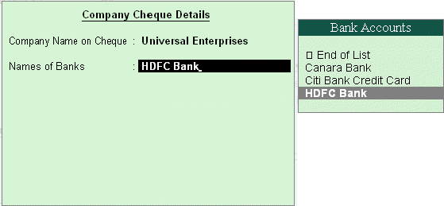
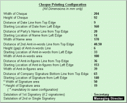

<!DOCTYPE HTML PUBLIC "-//W3C//DTD HTML 4.0 Transitional//EN">
<HTML>
<HEAD>
	<META HTTP-EQUIV="CONTENT-TYPE" CONTENT="text/html; charset=utf-8">
	<TITLE></TITLE>
	<META NAME="GENERATOR" CONTENT="LibreOffice 4.1.6.2 (Linux)">
	<META NAME="AUTHOR" CONTENT="lenovo">
	<META NAME="CREATED" CONTENT="20180816;152300000000000">
	<META NAME="CHANGEDBY" CONTENT="lenovo">
	<META NAME="CHANGED" CONTENT="20180828;44200000000000">
	<META NAME="AppVersion" CONTENT="12.0000">
	<META NAME="DocSecurity" CONTENT="0">
	<META NAME="HyperlinksChanged" CONTENT="false">
	<META NAME="LinksUpToDate" CONTENT="false">
	<META NAME="ScaleCrop" CONTENT="false">
	<META NAME="ShareDoc" CONTENT="false">
	<STYLE TYPE="text/css">
	<!--
		@page { size: 8.5in 11in; margin: 1in }
		P { margin-bottom: 0.08in; direction: ltr; widows: 2; orphans: 2 }
	-->
	</STYLE>
</HEAD>
<BODY LANG="en-US" DIR="LTR">
<P STYLE="margin-top: 0.08in; margin-bottom: 0.07in; line-height: 100%">
<FONT COLOR="#000000"><FONT FACE="Arial, serif"><FONT SIZE=5><B>Voucher
and Cheque Printing </B></FONT></FONT></FONT>
</P>
<P ALIGN=JUSTIFY STYLE="margin-top: 0.03in; margin-bottom: 0.07in; line-height: 100%">
<FONT COLOR="#000000"><FONT FACE="Arial, serif"><FONT SIZE=4>To
activate </FONT></FONT></FONT><FONT COLOR="#000000"><FONT FACE="Arial, serif"><FONT SIZE=4><B>Cheque
printing</B></FONT></FONT></FONT><FONT COLOR="#000000"><FONT FACE="Arial, serif"><FONT SIZE=4>,
Tally.ERP 9 provides you with a facility to print all types of
vouchers. You can print a voucher on save or you can print it later.
It is also possible to print formal receipts and cheques. The real
benefit for a user is that you issue cheques to parties only after
accounting the payment transactions </FONT></FONT></FONT>
</P>
<P STYLE="margin-bottom: 0.14in"><FONT FACE="Arial, serif"><FONT SIZE=4 STYLE="font-size: 16pt"><I>Go
to </I></FONT></FONT><FONT FACE="Arial, serif"><FONT SIZE=4 STYLE="font-size: 16pt"><I><B>Gateway
of Tally &gt; F11: Features &gt; F1: Accounting Features</B></I></FONT></FONT></P>
<P STYLE="margin-bottom: 0.14in"> <FONT SIZE=4><I><B># </B></I></FONT><FONT FACE="Arial, serif"><FONT SIZE=4>Set
</FONT></FONT><FONT FACE="Arial, serif"><FONT SIZE=4><B>Enable Cheque
Printing </B></FONT></FONT><FONT FACE="Arial, serif"><FONT SIZE=4>to
</FONT></FONT><FONT FACE="Arial, serif"><FONT SIZE=4><B>Yes</B></FONT></FONT></P>
<P STYLE="margin-bottom: 0.14in"> <FONT SIZE=4><B># </B></FONT><FONT FACE="Arial, serif"><FONT SIZE=4>Enable
</FONT></FONT><FONT FACE="Arial, serif"><FONT SIZE=4><B>Set/Alter
Cheque Printing Configuration </B></FONT></FONT><FONT FACE="Arial, serif"><FONT SIZE=4>to
</FONT></FONT><FONT FACE="Arial, serif"><FONT SIZE=4><B>Yes </B></FONT></FONT>
</P>
<P STYLE="margin-bottom: 0.14in"><FONT SIZE=4><B># </B></FONT><FONT FACE="Arial, serif"><FONT SIZE=4><B>Enter
</B></FONT></FONT><FONT FACE="Arial, serif"><FONT SIZE=4>the </FONT></FONT><FONT FACE="Arial, serif"><FONT SIZE=4><B>Company
Name on the Cheque </B></FONT></FONT><FONT FACE="Arial, serif"><FONT SIZE=4>(if
cheque is not preprinted with Company Name) </FONT></FONT>
</P>
<P STYLE="margin-bottom: 0.14in"><FONT SIZE=4><B># </B></FONT><FONT FACE="Arial, serif"><FONT SIZE=4><B>Enter
</B></FONT></FONT><FONT FACE="Arial, serif"><FONT SIZE=4>the </FONT></FONT><FONT FACE="Arial, serif"><FONT SIZE=4><B>Bank
Name </B></FONT></FONT><FONT FACE="Arial, serif"><FONT SIZE=4>(as
created in the Ledgers)</FONT></FONT></P>
<P STYLE="margin-bottom: 0.14in">                                
</P>
<P STYLE="margin-bottom: 0.14in">
</P>
<P STYLE="margin-bottom: 0.14in"><BR><BR>
</P>
<P STYLE="margin-bottom: 0.14in"><BR><BR>
</P>
<P STYLE="margin-bottom: 0.14in"><BR><BR>
</P>
<P STYLE="margin-bottom: 0.14in"><BR><BR>
</P>
<P STYLE="margin-bottom: 0.14in"><FONT FACE="Arial, serif"><FONT SIZE=4><B>Enter
</B></FONT></FONT><FONT FACE="Arial, serif"><FONT SIZE=4>the </FONT></FONT><FONT FACE="Arial, serif"><FONT SIZE=4><B>Cheque
Dimensions</B></FONT></FONT></P>
<P STYLE="margin-bottom: 0.14in"></P>
<P STYLE="margin-bottom: 0.14in"><FONT SIZE=4>Tally.ERP 9 allows you
the flexibility to specify the payee's name other than the ledger
account under which the payment is accounted. Once the voucher is
saved, Tally.ERP 9 prompts you to print the cheque.</FONT></P>
<P STYLE="margin-bottom: 0.14in"><BR><BR>
</P>
</BODY>
</HTML>